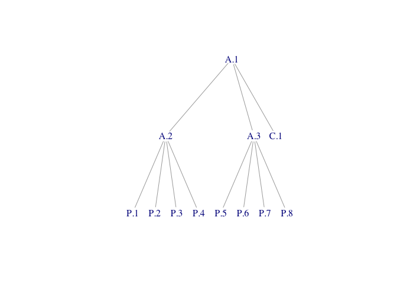

The massProps package extends rollupTree with functions to recursively calculate mass properties (and optionally, their uncertainties) for arbitrary composition trees. Formulas implemented are described in a technical paper published by the Society of Allied Weight Engineers.(Zimmerman and Nakai 2005)
Installation
install.packages("massProps")You can install the development version of massProps from GitHub with:
# install.packages("pak")
pak::pak("jsjuni/massProps")Example
Suppose we have the following mass properties table:
library(massProps)
test_table
#> id parent mass Cx Cy Cz Ixx Ixy Ixz Iyy Iyz Izz POIconv Ipoint
#> 1 A.1 NA NA NA NA NA NA NA NA NA NA - FALSE
#> 2 A.2 A.1 NA NA NA NA NA NA NA NA NA NA - FALSE
#> 3 A.3 A.1 NA NA NA NA NA NA NA NA NA NA - FALSE
#> 4 C.1 A.1 5 0 0 0 80 -4.0 -24.0 80 -24.0 75 - FALSE
#> 5 P.1 A.2 2 1 1 1 4 -0.1 -0.1 4 0.1 4 - FALSE
#> 6 P.2 A.2 2 1 1 -1 4 -0.1 -0.1 4 0.1 4 - FALSE
#> 7 P.3 A.2 2 1 -1 1 4 -0.1 -0.1 4 0.1 4 - FALSE
#> 8 P.4 A.2 2 1 -1 -1 4 -0.1 -0.1 4 0.1 4 - FALSE
#> 9 P.5 A.3 2 -1 1 1 4 -0.1 -0.1 4 0.1 4 - FALSE
#> 10 P.6 A.3 2 -1 1 -1 4 -0.1 -0.1 4 0.1 4 - FALSE
#> 11 P.7 A.3 2 -1 -1 1 4 -0.1 -0.1 4 0.1 4 - FALSE
#> 12 P.8 A.3 2 -1 -1 -1 4 -0.1 -0.1 4 0.1 4 - FALSEand this graph with edges representing child-parent relations:
library(igraph)
E(test_tree)
#> + 11/11 edges from d76039e (vertex names):
#> [1] A.2->A.1 A.3->A.1 C.1->A.1 P.1->A.2 P.2->A.2 P.3->A.2 P.4->A.2 P.5->A.3
#> [9] P.6->A.3 P.7->A.3 P.8->A.3
We can roll up mass properties to non-leaf elements as follows:
rollup_mass_props(test_tree, test_table)
#> id parent mass Cx Cy Cz Ixx Ixy Ixz Iyy Iyz Izz POIconv Ipoint
#> 1 A.1 21 0 0 0 144 -4.8 -24.8 144 -23.2 139 - FALSE
#> 2 A.2 A.1 8 1 0 0 32 -0.4 -0.4 24 0.4 24 - FALSE
#> 3 A.3 A.1 8 -1 0 0 32 -0.4 -0.4 24 0.4 24 - FALSE
#> 4 C.1 A.1 5 0 0 0 80 -4.0 -24.0 80 -24.0 75 - FALSE
#> 5 P.1 A.2 2 1 1 1 4 -0.1 -0.1 4 0.1 4 - FALSE
#> 6 P.2 A.2 2 1 1 -1 4 -0.1 -0.1 4 0.1 4 - FALSE
#> 7 P.3 A.2 2 1 -1 1 4 -0.1 -0.1 4 0.1 4 - FALSE
#> 8 P.4 A.2 2 1 -1 -1 4 -0.1 -0.1 4 0.1 4 - FALSE
#> 9 P.5 A.3 2 -1 1 1 4 -0.1 -0.1 4 0.1 4 - FALSE
#> 10 P.6 A.3 2 -1 1 -1 4 -0.1 -0.1 4 0.1 4 - FALSE
#> 11 P.7 A.3 2 -1 -1 1 4 -0.1 -0.1 4 0.1 4 - FALSE
#> 12 P.8 A.3 2 -1 -1 -1 4 -0.1 -0.1 4 0.1 4 - FALSE